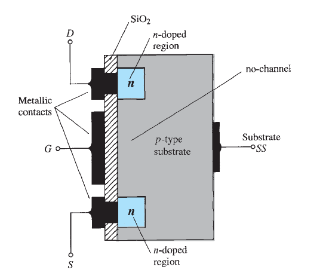
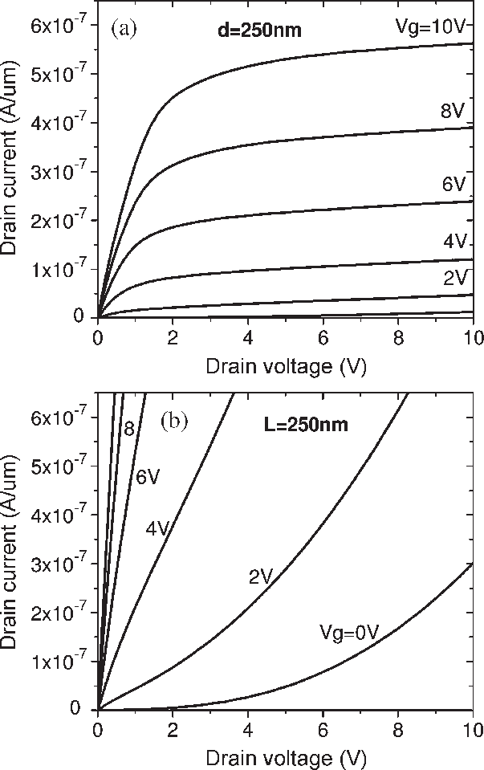

FETs are voltage-controlled devices with high input impedance. They're essential in analog electronics, used for amplification, switching, buffering, and impedance matching.
🔍 Types of FETs
JFET (Junction FET): Voltage controls current through reverse-biased junction
MOSFET (Metal-Oxide-Semiconductor FET): Most common, high input impedance
Enhancement-mode: Requires gate voltage to turn ON
Depletion-mode: Conducts with zero gate voltage
⚙️ Structure & Operation
FETs have three terminals: Gate, Drain, and Source.

Gate voltage modulates channel conductivity
No gate current flows → high input impedance
Drain current depends on gate-source voltage (VGS)
📐 Characteristic Equations
I_D = I_{DSS} (1 - V_{GS}/V_P)^2
For JFET in saturation:
ID: drain current
VGS: gate-source voltage
VP: pinch-off voltage
For enhancement MOSFET:
I_D = k (V_{GS} - V_{th})^2
📊 Output Characteristics

🔁 Animation: MOSFET Channel Formation
As VGS increases, an n-channel forms allowing electrons to flow from source to drain.
📘 Example: MOSFET Amplifier
Given: k = 0.5 mA/V², Vth = 2V, VGS = 4V
I_D = 0.5 × (4 - 2)² = 2 mA
💡 Applications
Low-power amplifiers
CMOS logic circuits
Analog switches
Buffer and impedance matching
Power control in SMPS
📝 Practice Quiz
Why are FETs considered voltage-controlled devices?
Answer: Because the gate voltage controls the drain current without drawing gate current.
What is the typical input impedance of a MOSFET?
Answer: Extremely high, often in the mega-ohm range.
What's the condition for a MOSFET to operate in saturation?